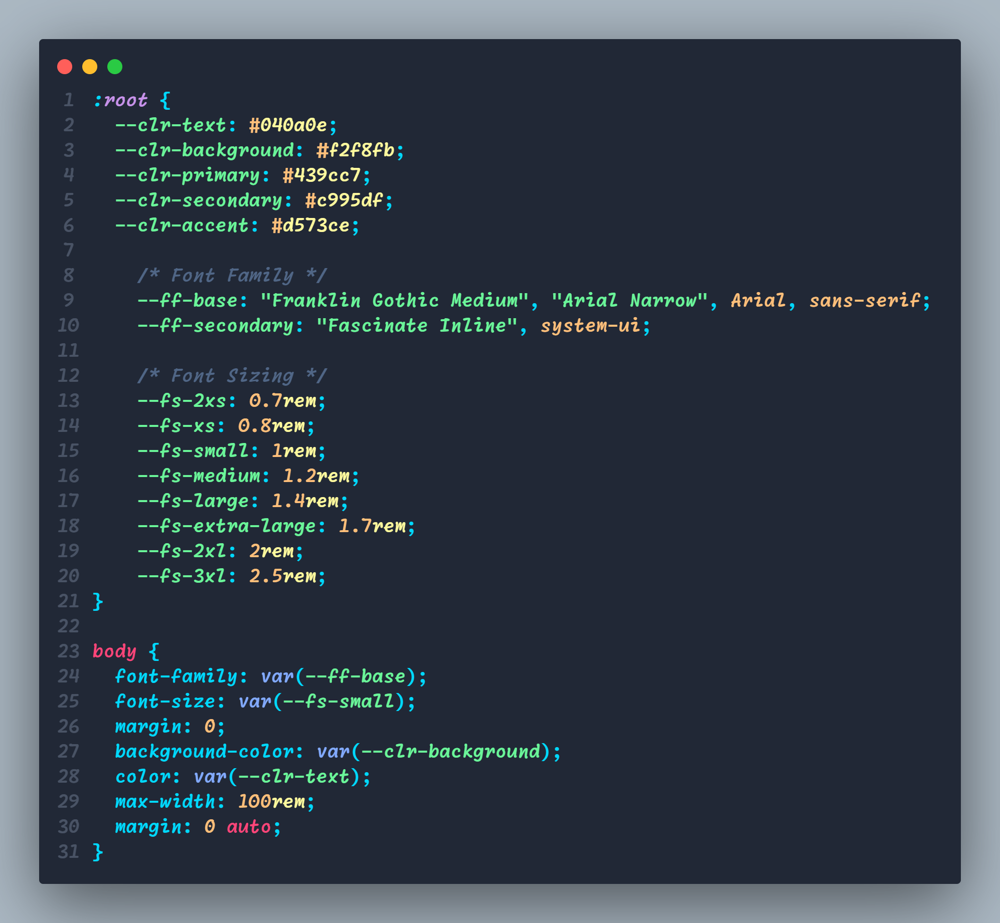

CSS Custom Properties
A powerful easy to use tool to change your CSS workflow for the better.
What is it?
Custom variables store values
What does it do?
Why use it?
Should I use it?
Yes, browser availability is very high at 97.75% as shown on Can I Use webpage: Can I Use
Maintainability
CSS custom properties creates projects that are easy to change and/or maintain since values can be changed in one place at the root. That value will then be replaced in all locations that the specified variable is. Imagine changing the color scheme part way through the project and having to find and replace each color. With variables you would only have to change them into the specified variables at the root. Which greatly reduces the risk of errors and increases the speed to make changes. Since developers won’t have to look through a large code base to find what they are looking for.
Readability
While initially it will take more planning to create a naming scheme, this ability to have specific naming schemes can create code that is easy to read and understand. For example, font size 3xs, 2xs, small, medium, large, extra-large would be easier to read then font size: 1 rem, font size: 1.5 rem etc.. This provides much more meaning and makes it easier to know where each value goes. Custom variables also enhance collaboration among team members due them being easy to understand. This also allows new team members to understand the code easier with large documentation needed.
Scalability
There are several reasons why CSS custom properties make a project more scalable. First, is the consistency they provide throughout the code as the same variable can be reused in multiple places. Secondly, custom properties provide reduced redundancy by minimizing the need for repetitive code, which allows for cleaner and easier to maintain code. Lastly, CSS variables can also be defined in selectors other than the root allowing for localized changes without affecting the rest of the code.
Where would you use it?
References
CSS Custom Properties Guide by Chris Coyier CSS-Tricks
MDN Web Docs by MDN Contributors MDN Web Docs
A Strategy Guide To CSS Custom Properties by Michael Riethmuller Smashing Magazine
Further Reading
Get a CSS Custom Property value wit JavaScript by Andy Bell Piccalilli
CSS Custom Properties In The Cascade by Miriam Suzanne Smashing Magazine
It’s Time To Start Using CSS Custom Properties by Serg HospodaretsSmasing Magazine
Prefer videos? some options:
CSS Custom Properties Playlist by Kevin Powell Youtube
Learn CSS Variables In 7 Minutes by Slaying The Dragon Youtube
SASS Tutorial (build you own CSS libary) - variables by Net Ninja Youtube